Nanja van Dongen - Den Bosch
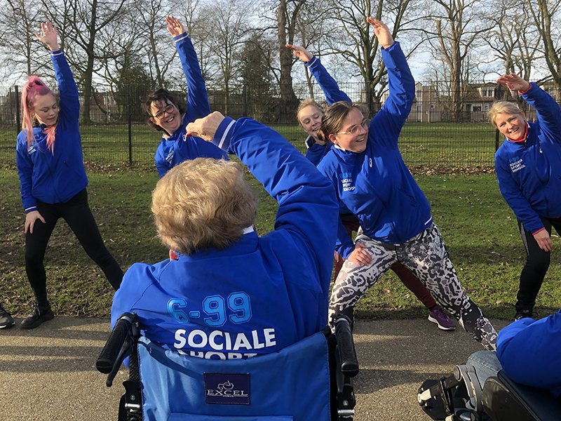Nanja van Dongen is fitness trainer bij Anytime Fitness in Vlijmen. Voor de Sociale Sportschool gaf zij eerder bootcamps op de locatie Nieuwehagen van Brabantzorg in Den Bosch. Zij geeft nu Sociale Sportschool introductie trainingen. “Het is heel leuk om met die ouderen gewoon lekker naar buiten te gaan, zeker als ze de hele dag binnen moeten zitten en niet echt in beweging zijn. De connecties maken vind ik ook mooi. Een oudere mevrouw die in het begin erg koeltjes was en met niemand sprak, kwam helemaal los toen ze een vast sportmaatje had. Ze was heel blij om haar sportmaatje telkens te zien. Dat is een heel mooi verschil.”
Tom Naberink - Nijmegen
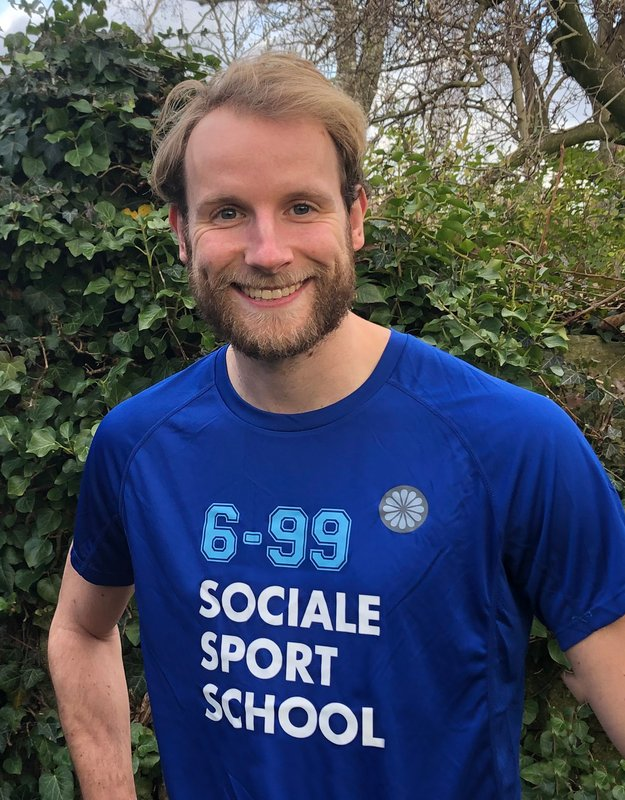Tom Naberink is projectleider voor de Sociale Sportschool en hij geeft Sociale Sportschool instructietrainingen. Tom is als docent-onderzoeker Sporteconomie en Strategisch Sportmanagement verbonden met de HAN (Hogeschool Arnhem en Nijmegen). Tom onderzoekt de maatschappelijke impact van het project (bewegen/sociaal contact in relatie tot gezonde levensjaren). Daarbij maakt hij onder andere gebruik van de Sport Impact Wijzer die hij samen met Jelle Schoemaker voor het Kenniscentrum Sport & Bewegen heeft ontwikkeld.
Mireille Hulzebos - Utrecht
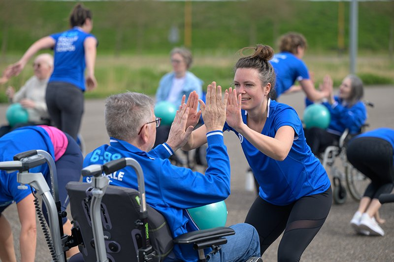Mireille Hulzebos is vitaloog, trainer, vitaliteitscoach en bootcamptrainer. Op haar initiatief is de Sociale Sportschool naar Utrecht gehaald, omdat er voor haar een paar belangrijke componenten samenkomen: buiten bewegen en met elkaar verbinden. "Wat een beetje onwennig begint, hoe iedereen een maatje vindt. Met een grapje en een lach, dat iedereen hetzelfde t-shirt dragen mag. Als de verlegenheid wegebt, dat je een gezellig praatje hebt. Een hand op een schouder, jong, oud en ouder. Een kriebel in je buik, een brok in je keel. Oprechte aandacht aan iemand geven, is nooit te veel."
Peter Verbeek - Eindhoven
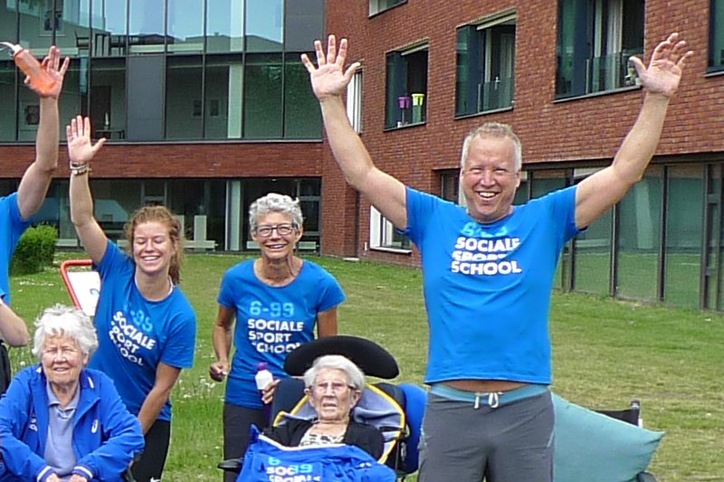Peter Verbeek haalde de Sociale Sportschool naar Eindhoven en valt nu soms nog een keer in als trainer. Peter was sportschooleigenaar, karakteleraar, skileraar, en raakte steeds meer geïnteresseerd in positieve psychologie. Hij is partner van It’s my life en timmert hard aan de weg om heel Nederland in beweging te krijgen met de beloningsapp Fitcoins. “Ik had geen zin meer in les geven, maar de Sociale Sportschool is zo’n fantastische en dankbare activiteit. Het hele concept is eenvoudig maar briljant. En het sociale aspect is echt geweldig. Je ziet gewoon aan iedereen, zowel aan de ouderen als aan de sportmaatjes die vrijwillig komen, hoe ontzettend leuk ze het vinden. Er ontstond zelfs een vriendschap tussen een oudere mevrouw die bijna geen bezoek kreeg. Het sportmaatje ging één of twee keer per week bij haar langs. Dat is gewoon fantastisch om te zien.”
Merel van der Veldt - Eindhoven
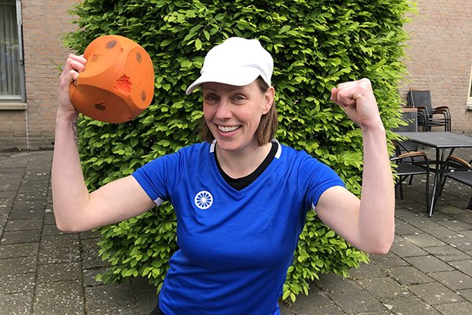Merel van der Veldt is een fanatieke sporter en bootcamp trainer. Daarnaast is ze een passionele eventcreator en organiseert ze allerlei soorten op maat evenementen. “Ik werd meteen blij en enthousiast toen ik op de openstaande vacature van trainer stuiterde. Geweldig om te zien hoe jullie sporten weten te combineren met een maatschappelijk doel. Ik word ik erg blij wanneer ik mensen kan helpen en motiveren om in beweging te komen en ze te laten zien hoe leuk sporten is. Het wordt extra leuk wanneer je het samen kan doen. Het lijkt me dan ook fantastisch om als trainer een maatschappelijke bijdrage te kunnen leveren waarbij jong en oud samen komen.”
Robbin Castillo - Eindhoven
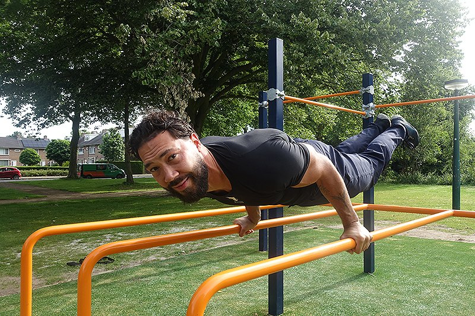Robbin Castillo is een professionele bewegingscoach met een breed scala aan ervaring van yoga tot powerliften en calisthenics. Hij heeft zijn eigen praktijk en reist door Nederland om workshops te verzorgen. Daarnaast is hij ook actief als beoefenaar van vechtsporten en neemt hij deel aan wedstrijden. “Ik wil graag mijn kennis delen met de Sociale Sportschool, zodat deelnemers op een verantwoorde en holistische manier kunnen werken aan hun uithoudingsvermogen, balans, mobiliteit en functionele kracht. Met mijn vriendelijke en deskundige aanpak zorg ik ervoor dat de deelnemers zich op hun gemak voelen en gemotiveerd zijn om elke bootcamp bij te wonen. Ik geloof dat beweging niet alleen goed is voor het lichaam, maar ook voor de geest. Samen zullen we werken aan het creëren van een positieve en ondersteunende omgeving waarin iedereen kan groeien en bloeien.”
Reggy Laatsch - Zoetermeer
Reggy Laatsch is oprichter en eigenaar van Parkour Disciplines. Parkour Disciplines is gespecialiseerd in freerunning lessen voor alle leeftijden. Zij hebben 2 indoor freerunning locaties in Zoetermeer en leveren een lokale trainer voor de Sociale Sportschool. De Sociale Sportschool bootcamps passen heel erg goed bij Reggy: “Ik heb een liefde voor bewegen in de openbare ruimte. Ik vind het belangrijk dat iedereen op zijn of haar eigen niveau wordt uitgedaagd en streeft naar saamhorigheid in de groep. Ik heb met freerunning al ervaring met een 65-plusgroep, waarvan het oudste lid 85 jaar is.”
Sonny Leermans - Den Bosch
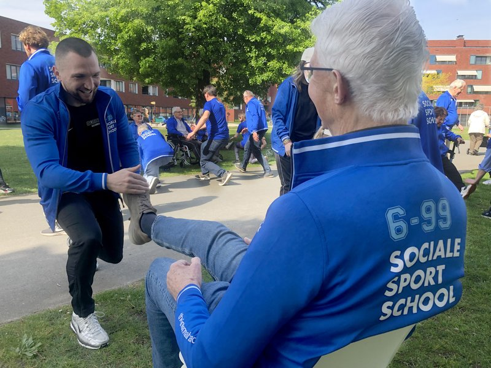Met een achtergrond als woon/ambulant begeleider in de zorg en als boksagoog, breng ik een combinatie van expertise en passie mee naar de Sociale Sportschool. Naast mijn werk in de zorg geef ik personal training en small group trainingen (Power, HIIT en Kickboxing). Mijn motivatie om bij te dragen aan de Sociale Sportschool komt voort uit mijn overtuiging dat sport niet alleen fysieke voordelen biedt, maar ook bijdraagt aan mentale en sociale welzijn. Ik geloof in de kracht van gemeenschap en wil graag anderen helpen om sterker en zelfverzekerder te worden, zowel fysiek als mentaal. Het samenbrengen van jong en oud door middel van sport vind ik bijzonder waardevol, omdat het generaties verbindt en daar draag ik graag mijn steentje aan bij.
Monika Kanselaar - Utrecht
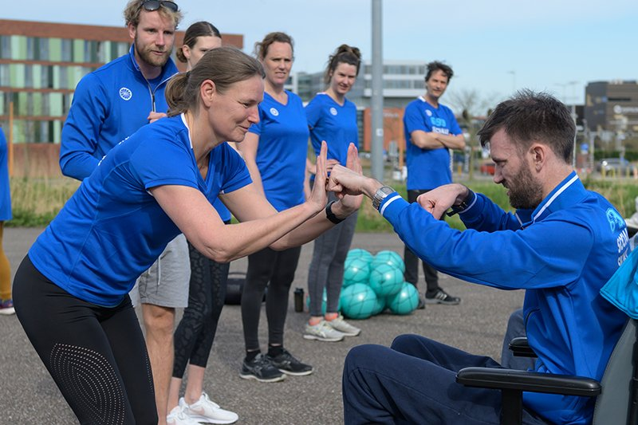Binnenkort meer informatie.
Wil jij ook trainer worden voor de Sociale Sportschool?
Kijk voor meer infomatie op de vacature pagina.
Irene van Lith/Pro Athletics - Oirschot/Vessem
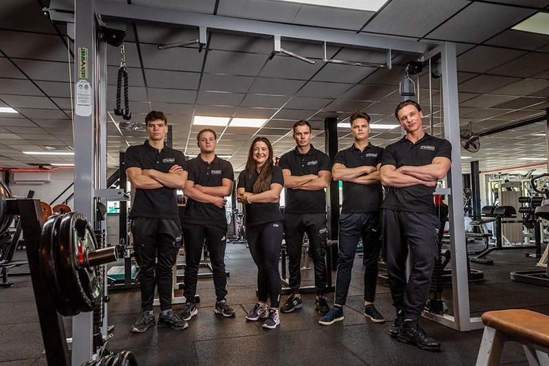Irene van Lith is eigenaresse van ‘de gezelligste sportschool van de Kempen’ Pro Athletics in Bladel: “De naam ‘Sociale Sportschool’ sprak mij meteen aan! Ik houd van alle sociale dingen! Zo begeleiden wij mensen met een achterstand in de maatschappij, en zijn we te vinden bij de kinderopvang en op de scholen met
boksend opvoeden. Ook de doelgroep ouderen is mij al bekend (wij geven o.a. stoelyoga/beweeglessen) en ik vind het heel leuk om voor hun een leuk uitje te kunnen verzorgen, en in combinatie met jongeren vind ik het echt een heel goed initiatief. Met mijn enthousiasme en energie maak ik van elke les een feest en het
koffie momentje met de ouderen vind ik altijd op zijn Brabants gezegd keigezellig!”
Christy Manders - Eindhoven
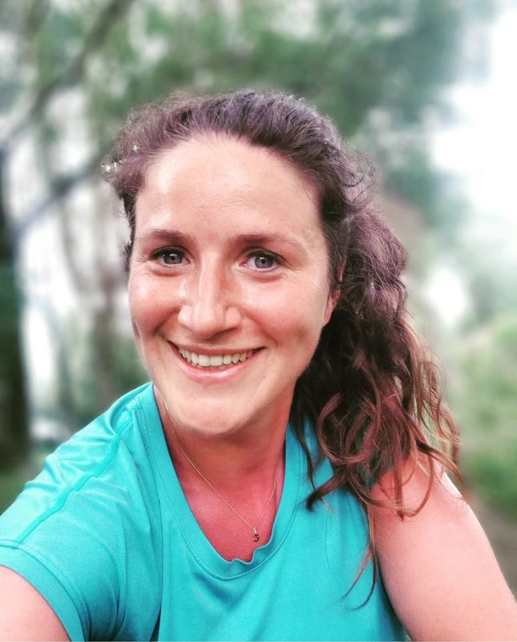Ik ben een enthousiaste, motiverende trainster die het heerlijk vindt om mensen te stimuleren om net dat stukje extra uit zichzelf te halen. Waardoor ze na een training vol goede energie weer verder gaan met hun dag. Tijdens de trainingen ben ik altijd in voor een grapje en praatje om de sfeer er lekker in te houden! De sociale sportschool spreekt me onwijs aan omdat ik het belangrijk vind dat iedereen zich gehoord en gezien voelt. Ik ben namelijk van mening dat de combinatie van jong en ouder het beste in elkaar naar boven kan halen. Ik heb ruime ervaring in het geven van trainingen, voor zowel grote als kleinere groepen. Dit vind ik zo fijn om te doen dat ik mijn eigen onderneming ben gestart genaamd Motivation By Christy. Hopelijk mag ik jullie binnenkort gezellig ontmoeten.
Patricia Basten - Blerick
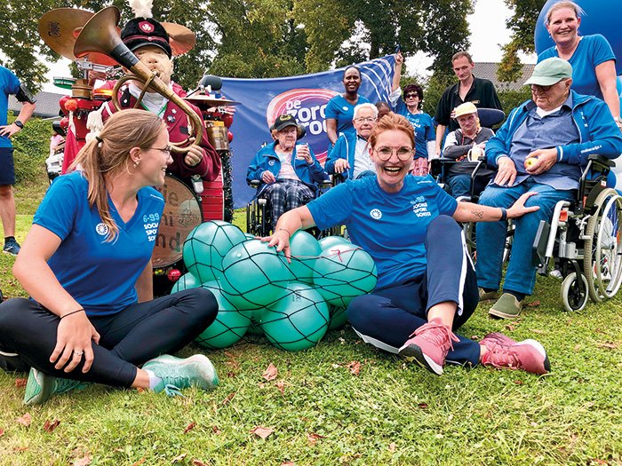Patricia Basten is eigenaar van BlissPoint Coaching en sportcoach bij My35' Milon Studio's in Blerick-Venlo. "In een tijd waarin steeds meer mensen - vooral ouderen - het risico lopen om in een sociaal isolement te raken, biedt de Sociale Sportschool een uitweg. Door samen met jongeren te sporten, blijven ouderen niet alleen fysiek actief, maar bouwen ze ook nieuwe vriendschappen op. Jongeren profiteren op hun beurt van de wijsheid en levenservaring van ouderen, wat een gevoel van gemeenschap en wederzijds respect bevordert. Door gratis toegang te bieden, maken we beweging en sociaal contact toegankelijk voor iedereen, ongeacht financiële situatie. De Sociale Sportschool past binnen het Leefstijlakkoord, dat streeft naar een gezondere en meer inclusieve samenleving.”